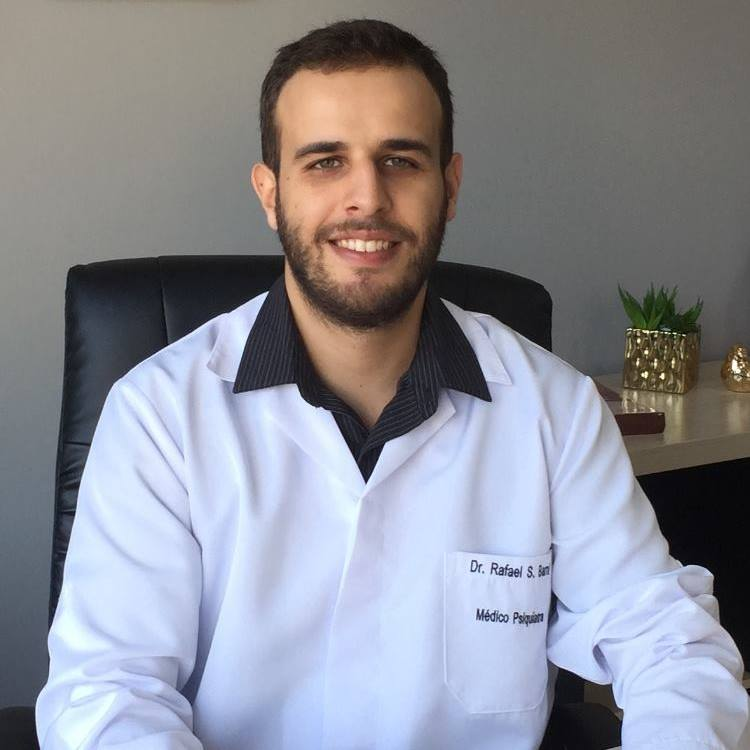
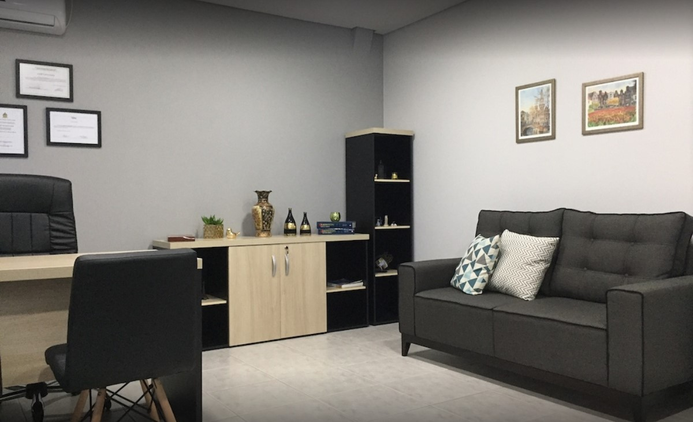
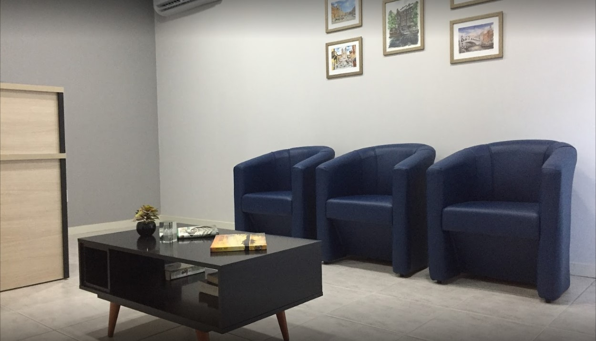
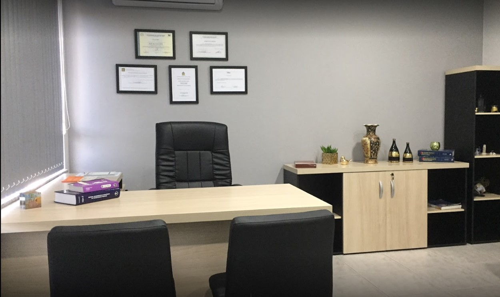
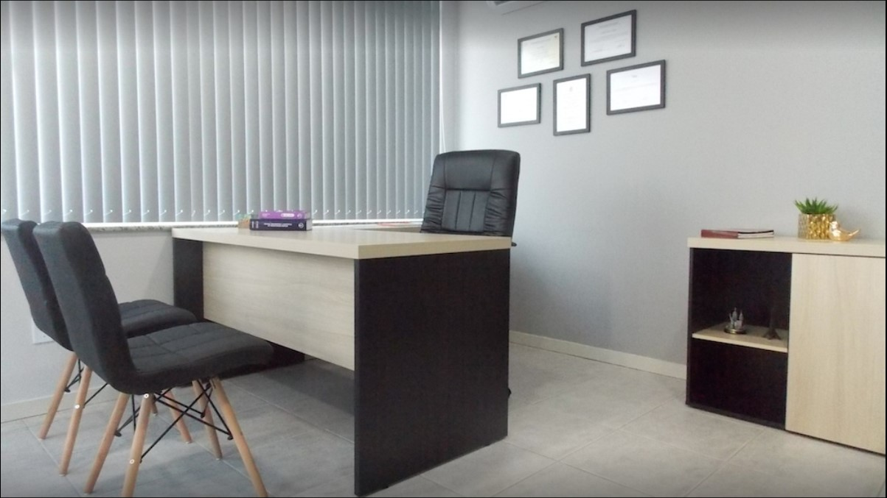
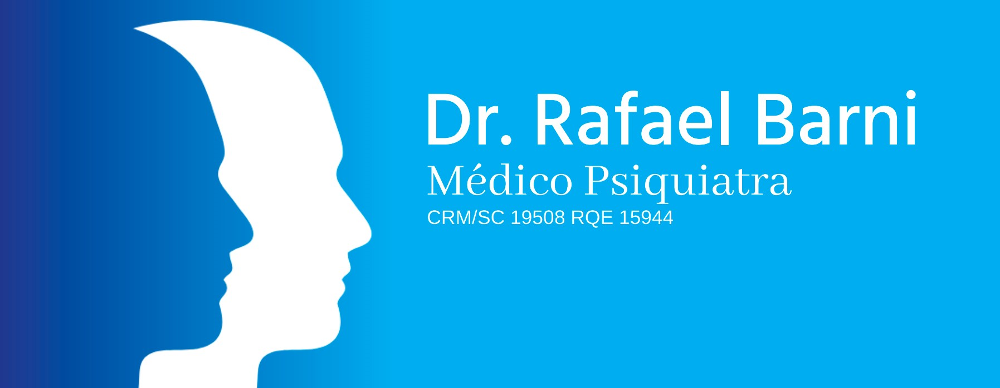

Atendimento Especializado para Brusque e Região
Formação ProfissionalPsiquiatra Dr. Rafael Barni

Acolhimento e Orientação
Oferecemos aos nossos pacientes uma ampla gama de tratamentos em psiquiatria. Desde a primeira avaliação define-se um plano terapêutico individualizado, com foco na melhora da qualidade de vida e no alívio dos sintomas.
Ansiedade
Os transtornos de ansiedade caracterizam-se por sentimentos de preocupação, angústia ou medo que se agravam com o passar do tempo e geram prejuízo às tarefas do dia a dia.
Depressão
Grupo de enfermidades com impacto sobre o humor, os pensamentos e as atitudes. Indivíduos afetados costumam apresentar tristeza e perda de interesse nas atividades.
Pânico
Um ataque de pânico é uma crise abrupta de medo ou desconforto intenso, que alcança um pico em minutos e gera sensações físicas e mentais desagradáveis.
Insônia
Dificuldade para iniciar ou manter o sono, podendo afetar sua qualidade e quantidade, além de acarretar consequências para esferas importantes da vida.
Consultório Psiquiátrico
Rafael Barni
Situado no Centro de Brusque, o consultório possui localização privilegiada, próximo ao Terminal Urbano, à Secretaria de Saúde e ao INSS.
Nosso espaço moderno e acolhedor assegura o bem-estar e a privacidade essenciais para o seu tratamento.





Agende sua consulta!
Dr. Rafael Barni. Atendimento Especializado em Psiquiatria para Brusque e Região.
Entrar em contato- (47) 9 9607-8606
- Piso Superior, R. Adriano Schaeffer, 141 - Centro 1, Brusque - SC
- contato@psiquiatrabrusque.com.br